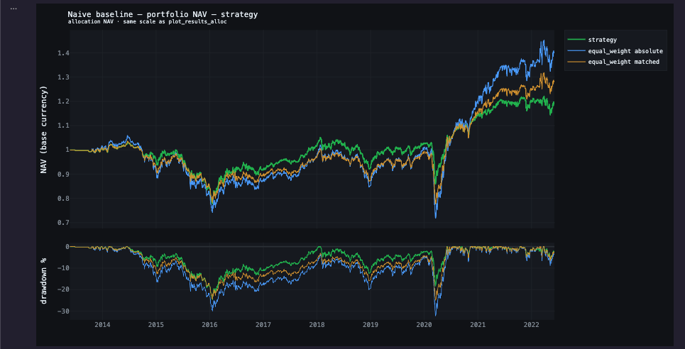
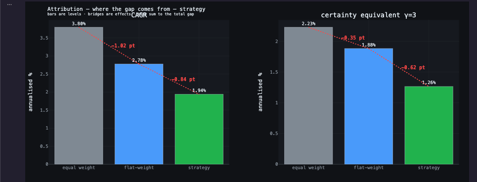
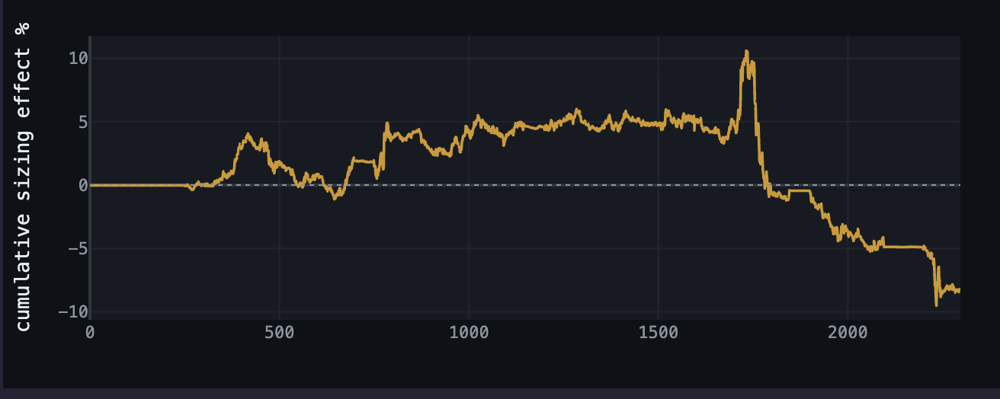
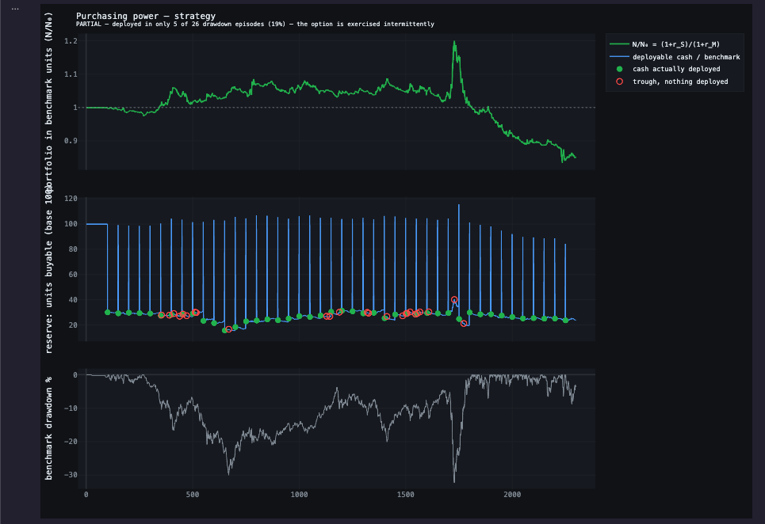
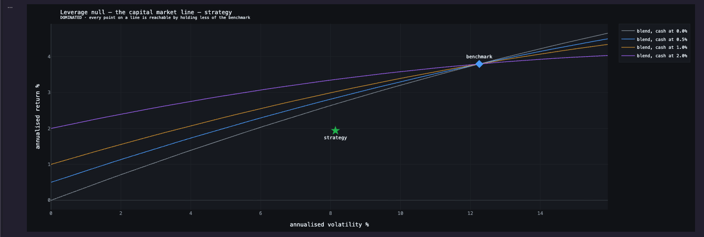

J'ai construit un moteur de backtest, puis la couche chargée de rejeter ses résultats.
Cette note rapporte ce que la couche de validation a renvoyé lorsque je l'ai pointée sur la stratégie d'allocation qui tourne sur le moteur. Trois tests, trois verdicts, et l'énoncé de ce qu'ils ne permettent pas de conclure.
Une optimisation de portefeuille glissante, long-only, plafonnée à 35 % par nom. La construction est celle de Markowitz, à une substitution près : la mesure de risque n'est pas la variance mais la durée passée sous le plus haut, ce qui la situe du côté post-moderne de la théorie du portefeuille. Réestimée sur 100 barres, rebalancée toutes les 50.
Par-dessus, la politique testée : 30 % de réserve de trésorerie, 2 % de frais de gestion provisionnés à l'année et payés au trimestre, 5 % de commission de surperformance avec high-water mark, coûts d'exécution au comptant. Ni emprunt ni interruption intra-période sur ce run : rien ne s'intercale entre la règle de pondération et le résultat, ce qui est la condition pour que les tests ci-dessous mesurent la règle et non autre chose. Le moteur sait faire les deux, et un second run les active, mais il n'est pas le sujet de cette note.
La stratégie n'est pas de mon invention : c'est une construction de manuel, retenue comme sujet d'essai parce qu'elle est connue et reproductible. Le sujet de cette page n'est pas la stratégie, mais l'instrument qui la juge.

absolute consiste précisément à retirer ces deux réserves. Le panneau du bas
est le drawdown, plancher à −24,76 % sur 898 barres.
Unités. Tout écart sur cette page est exprimé en pt, points de pourcentage de rendement annualisé : la différence arithmétique entre deux runs du même moteur sur les mêmes barres, et non un pourcentage d'une base. 1,94 % − 3,80 % = −1,86 pt. Comme ce sont des différences de taux, elles s'additionnent : −0,84 pt et −1,02 pt somment au total de −1,86 pt.
Ce qu'un pt n'est pas. Ce n'est pas une fraction du capital engagé, et rien n'y est multiplié par un montant initial. C'est un écart de vitesse, et c'est la durée qui le transforme en argent. Sur les neuf ans testés, ces −1,86 pt de taux annuel composent en 21 points de capital terminal : 100 000 USD deviennent près de 119 000 avec la stratégie, contre 140 000 avec l'équipondération. L'écart annuel paraît petit, l'écart final ne l'est pas.
Deux moitiés qui ne valent quelque chose qu'ensemble
Un noyau comptable. Un kernel multi-actifs compilé, posé sur un registre qui boucle : paliers de trésorerie, emprunt avec carry overnight, plusieurs devises, frais provisionnés sur une horloge et payés sur une autre, dividendes. Son travail est de rendre un chiffre réel, c'est-à-dire garantir que le rendement mesuré est celui qu'un compte aurait effectivement gagné, après financement, frais et change.
Une couche de validation. Baselines, hypothèses nulles, comptabilité de la taille d'échantillon. Son travail est de dire quand ce chiffre ne veut rien dire.
La contrainte de conception est le coût de la seconde moitié. Réfuter un résultat proprement prend normalement plus de temps que de le produire. C'est pourquoi l'étape est le plus souvent omise, et pourquoi elle demeure une intention plutôt qu'une pratique. Ici un run s'enregistre lui-même, et chaque réfutation est un seul appel sur cet enregistrement.
Le verdict ci-dessous n'est pas le produit d'une vertu. Il est le produit d'une réfutation devenue la chose la moins coûteuse à faire. Le panier est délibérément cross-actifs et cross-devises (le DAX est coté en euro face à un book en dollar), de sorte que la couche de change est porteuse dans ce run, et non décorative.
Contre l'équipondération, net de frais, sur neuf ans
Cinq actifs, barres journalières depuis mai 2013, 46 décisions de rebalancement prises toutes les 50 barres sur une fenêtre d'estimation de 100 barres. Les derniers 30 % de l'historique sont mis de côté et n'ont pas été regardés.
| Annualisé | Stratégie | 1/N absolu | 1/N apparié | Écart |
|---|---|---|---|---|
| Rendement (CAGR) | 1,94 % | 3,80 % | 2,78 % | −1,86 pt |
| Volatilité | 8,14 % | 12,26 % | 9,32 % | −4,12 pt |
| Drawdown maximal | −24,76 % | −32,28 % | −25,03 % | +7,52 pt |
| Équivalent certain, γ = 3 | 1,26 % | 2,23 % | 1,88 % | −0,96 pt |
absolute : stripped reserve_cash_pct, fixed_cash_reserve · keeps execution
costs, management fee, performance fee, currencies
matched : every piece of machinery kept, only the weighting rule swapped
carrier : portfolio_equity(nav-borrowed) · basis D
VERDICT ADDS_NOTHING — certainty equivalent lower by -0.96%/y at γ=3
— equal_weight absolute does better for a risk-averse investor
no p-value: the allocation baseline is deterministic. This is a gap, not a test.

Pourquoi c'est la dernière ligne qui tranche
Un équivalent certain est le rendement garanti qu'un investisseur accepterait à la place du rendement risqué. L'équipondération est le portefeuille le plus volatil : elle paie donc la pénalité de risque la plus lourde, 1,57 point contre 0,68 pour la stratégie, et elle l'emporte néanmoins, 2,23 % contre 1,26 %. La stratégie perd après que la comparaison a été penchée en sa faveur.
Les deux baselines sont rejouées, pas calculées
Elles traversent la même machinerie comptable que la stratégie et paient les mêmes 2 % de frais de gestion, la même commission de surperformance de 5 % avec high-water mark, dans les mêmes devises. Seule la règle de pondération change. Comparer une stratégie nette de frais à une baseline brute est la façon la plus courante de fabriquer un edge qui n'existe pas. Ici c'est structurellement impossible.
Les coûts d'exécution sont déclarés dans le run mais ne mordent pas : en mode allocation ils passent par un chemin fondé sur les lots, et le slippage mesuré est nul. Les annoncer comme prélevés surestimerait la sévérité du test, des deux côtés de la comparaison.
La partie qui contient les mathématiques est celle qui bouge le moins
Garder le panier que la stratégie a choisi et remplacer ses poids par des poids égaux à l'intérieur de ce panier détruit la sortie de l'optimiseur et rien d'autre : mêmes dates, mêmes noms, même trésorerie, mêmes frais. Ce qui disparaît est exactement ce que l'optimiseur prétend apporter.
| Composante | Effet | t | Statut |
|---|---|---|---|
| Pondération, l'optimiseur lui-même | −0,84 pt | −0,63 | non détectable |
| Panier et politique de trésorerie | −1,02 pt | −1,37 | ≈ 99 décisions nécessaires |
| Total contre 1/N pleinement investi | −1,86 pt | · | · |
N_eff = 46 decisions -> nothing finer than p ≈ 0.02 is resolvable here
VERDICT SIZING: NO DETECTABLE EFFECT — -0.84 pt on 46 decisions (t = -0.63)
— inside sampling noise. Read it as 'no detectable effect', not as
a measured gain.
SELECTION is not detectable either: -1.02 pt, t = -1.37 — it would
take about 99 decisions to settle at this effect size.


Aucune des deux composantes n'est distinguable de zéro. La lecture honnête n'est ni « l'optimiseur n'apporte rien », ni « la politique de trésorerie coûte un point » : elle est que 46 décisions ne permettent pas de résoudre des effets de cette taille, et que la couche le dit au lieu d'imprimer les estimations ponctuelles comme des conclusions.
Lire les effets en absolu, pas en relatif : −0,84 pt signifie que le rendement annualisé est inférieur de 0,84 point de taux, pas de 0,84 %.
Ce qui subsiste, c'est un ordre. L'optimiseur, la partie qui porte les mathématiques, celle qui justifie toute la construction, déplace le résultat de 0,84 point avec un t de −0,63. La plomberie en dessous, une règle de réserve sans aucune théorie derrière, le déplace davantage. Cet ordre est le résultat.
L'outil imprime le second terme sous le nom de « selection ». Il regroupe en réalité deux choses : quels noms ont été détenus, et les 30 % gardés en réserve, parce que c'est la baseline absolue qui retire les réserves. Avec cinq actifs et un cap à 35 %, le panier bouge peu, et l'outil le chiffre : 4,05 positions effectives en médiane pour la stratégie contre 5,00 pour le run à poids plats, soit 0,95 position de concentration ajoutée par l'optimiseur. L'essentiel de ces −1,02 pt est donc la politique de trésorerie, pas le choix des noms.
La trésorerie arrive-t-elle quand elle vaut le plus cher ?
La stratégie détient du cash et le redéploie. Réduire l'exposition et s'assurer contre les mauvais états du monde se ressemblent dans une série de rendements. Les rendements sont donc repondérés par un facteur d'escompte stochastique, de sorte que les états où le marché a chuté comptent davantage, γ réglant l'intensité.
| Pondération de chaque déploiement | Rendement moyen |
|---|---|
| Non pondéré | 0,0089 % |
| Escompté, γ = 1 | 0,0065 % |
| Escompté, γ = 3 | 0,0014 % |
Le rendement pondéré baisse à mesure que les mauvais états comptent davantage. La trésorerie ne se concentre pas là où elle aurait de la valeur. C'est du dérisquage, pas de l'assurance. C'est une distinction qu'aucune comparaison de rendements ne peut faire. Sur 26 drawdowns de marché au-delà de −10 %, le cash a été déployé dans 5.
Ce profil de risque valait-il d'être payé ?
La stratégie tourne à 8,14 % de volatilité contre 12,26 % pour le marché. Comparer les rendements bruts n'a pas de sens : elle prend moins de risque, elle doit donc rapporter moins. La question est de savoir si un investisseur avait besoin du modèle pour y arriver. Détenir 66,4 % du marché et 33,6 % en cash reproduit exactement cette volatilité, avec deux instruments et aucune estimation.
| Taux sans risque supposé | Stratégie − mélange |
|---|---|
| 0,0 % | −0,74 pt |
| 2,0 % | −1,42 pt |
VERDICT DOMINATED — below the capital market line at every assumed risk-free rate (-1.42 to -0.74 pt). The same risk was available with more return by simply holding less of the benchmark -- no model required.


Une correction joue ici contre la stratégie, et elle a néanmoins été appliquée. Un mélange dé-levé subit moins de volatility drag : son rendement composé se situe donc au-dessus de la droite reliant le cash au marché : la frontière atteignable bombe vers le haut d'environ 0,17 point à ce poids. Juger la stratégie sur la droite l'aurait flattée d'autant. Le taux est balayé plutôt que supposé, et sur la plage testée le signe ne s'inverse jamais.
Ce que l'outil refuse de faire
L'essentiel du travail d'ingénierie porte sur les cas où la sortie correcte est une erreur, pas un chiffre.
Il refuse de comparer un in-sample à un out-of-sample. L'appel lève une erreur au lieu de renvoyer une différence flatteuse.
Il refuse de dimensionner sur des données absentes. Une fonction de décision qui ne reçoit aucun rendement lève, au lieu de dimensionner silencieusement sur des zéros.
Il refuse d'attacher une p-value à une baseline déterministe. L'équipondération est un objet unique, pas une distribution. Le rapport parle d'un écart, pas d'un test.
Il refuse de compter les barres comme des observations. 2 298 barres ne sont pas la taille d'échantillon ; 46 décisions le sont. Les différences sont sommées par période de rebalancement avant tout test.
Il refuse de vendre de la puissance statistique contre une grille plus fine. À historique constant, doubler le nombre de blocs laisse le t inchangé. Un test verrouille ce comportement pour qu'il ne soit pas jouable.
Il refuse de cacher une hypothèse dans une estimation ponctuelle. Quand une conclusion dépend d'une entrée, la sortie est le seuil auquel la conclusion bascule.
Il refuse de laisser mesurer la mauvaise série. La série qui porte la performance dépend du mode d'exécution. Lire la mauvaise donne un résultat faux sans en avoir l'air : un cas dans ce projet annonçait un drawdown de −11,1 % là où la bonne série en donnait −5,2 %.
Rejouer un chiffre six mois plus tard, à l'identique
Un run s'enregistre lui-même à la première ligne de son exécution, jamais en cours de route. La raison vient d'un bug : l'appel compile la spec d'allocation en une forme interne qui perd la devise, puis convertit le pack d'intentions en carnet d'ordres. Un enregistrement pris après ces étapes rejoue une configuration différente, et rien ne signale l'écart.
Sur cet enregistrement, la primitive est le rejeu : relancer la même chose avec exactement une chose changée. Douze des trente-quatre tests du catalogue ne sont que cette opération, assortie d'une recette de substitution et d'une comparaison. C'est aussi ce qui rend une réfutation aussi peu coûteuse.
La fenêtre hors échantillon est un clone, pas une continuation. Un
run hors échantillon qui hériterait de l'état de clôture in-sample, high-water mark,
coussin accumulé, réserves restaurées, ferait franchir la frontière à de
l'information. Le clone repart propre. Il démarre à début_oos − warmup
et le préfixe est coupé au retour : la fenêtre d'estimation reçoit ses données, et
ce sont des données passées.
Ce qui est vérifié, et à quelle tolérance
resume par segments = run continuau bit prèsassemblage incrémental = build completau bit prèsidentités comptables1e-10NAV aux barres de décisionréférence figéeCe que la couche ne peut pas garantir, et qu'aucune couche moteur ne pourrait : elle ne sait pas si les poids d'un pack d'intentions ont eux-mêmes été calculés en connaissant l'avenir. Ils sont construits en Python avant que le moteur ne les voie. C'est une convention que l'appelant doit tenir, et la couche le dit plutôt que de le masquer.
Les poids ne sont pas l'unité de ce qu'un compte a réellement gagné
Les poids déterminent le rendement pondéré. Tout ce qui sépare celui-ci de l'argent présent sur le compte (frais de gestion et de surperformance sur des horloges distinctes, coûts d'exécution qui dépendent de la rotation et non de la position, financement dont le carry dépend de la durée d'ouverture d'un emprunt, conversion de devises, dérive entre deux rebalancements) vit en dehors de l'espace des poids. Le moteur existe pour calculer cette différence.
C'est aussi ce qui rend les tests ci-dessus légitimes. Le null de sizing perturbe le canal des poids tout en gelant tout le reste. Ce gel est ce qui rend les 0,84 point imputables à l'optimiseur plutôt qu'à la charge de frais.
Des identités qui doivent boucler
NAV_gross = NAV_equity + borrowedchaque barreΣ flux de trésorerie = 0chaque barrefrais provisionnés = Σ prélèvementspériodepouvoir d'achat ≡ facteur d'escompte, γ=1strictCe que le registre modélise
C'est la partie qui n'apparaît jamais dans une courbe de performance et toujours dans une conversation de due diligence.
Un kernel, trois questions
Les modes partagent le registre mais pas la question à laquelle ils répondent, ni la série qui porte leur performance. Se tromper de série produit des chiffres faux sans en avoir l'air : c'est pourquoi le mode la détermine, et non l'appelant.
Signaux, setups, routage par régime, entrées et sorties sous une exécution réaliste à la barre. Une règle a-t-elle un edge ?
Une position ouverte porte son P&L latent sous forme de drift weight ; c'est la clôture du trade qui le réalise dans le registre, d'où une performance lue à la clôture : prix d'entrée contre prix de sortie, à l'échelle de l'exposition.
Poids cibles, calendriers de rebalancement, paliers de trésorerie, emprunt et frais. Une règle de pondération bat-elle la détention équipondérée ?
Apports et retraits, high-water marks, gates de drawdown, restauration du capital. Qu'a réellement vécu un compte ?
Le mode investissement rend compte sur une base pondérée par le temps parce que c'est ce qu'exigent les standards de reporting : elle neutralise les apports et les retraits, sur lesquels le gérant n'a pas la main. Ce n'est pas une préférence, c'est la seule mesure défendable dès qu'il y a des flux.
Écrites délibérément, parce que les limites énoncées sont le propos
- 46 décisions, c'est la taille d'échantillon. Des effets inférieurs à environ deux points de rendement annuel ne sont établissables ici par aucune méthode, et le rapport le dit au lieu de les rapporter.
- Un seul régime. 2013–2022 est un environnement macro unique. Rien ici ne se généralise à des conditions absentes de l'échantillon.
- Une seule configuration. Cinq actifs, un rebalancement à 50 barres, une fenêtre de 100. C'est un énoncé sur cette configuration, pas sur l'optimisation de portefeuille en général.
- La fenêtre réservée n'a pas été utilisée. La rapporter maintenant en ferait un second in-sample.
- Les coûts sont modélisés, pas observés. Spread, commission et carry sont des paramètres ; aucune prétention qu'ils correspondent à un courtier particulier.
Ce qui est publié, et ce qui ne l'est pas
Publié. Le dépôt public est un instantané du moteur algorithmique tel qu'il était en avril 2026 : assez pour définir un signal, le faire tourner sous un modèle d'exécution réaliste, et inspecter les trades produits. C'est un sous-ensemble fonctionnel, pas une démo réduite.
Non publié. Le moteur d'allocation et d'investissement qui a produit cette note est privé : le registre, la machinerie de trésorerie et d'emprunt, la provision des frais, la couche de devises, et la couche de validation elle-même. Il est couvert par 401 tests. Toutes les mesures de cette page en proviennent, et chaque test décrit ci-dessus est spécifié assez précisément pour être réimplémenté sur n'importe quelle série de rendements.
La stratégie testée est une construction de manuel (l'optimisation de Markowitz dont la mesure de risque est remplacée par la durée sous le plus haut), retenue parce qu'elle a une réponse connue, pas parce qu'elle est de moi. Le résultat appartient à une famille documentée : DeMiguel, Garlappi et Uppal (2009) montrent que l'équipondération bat la moyenne-variance hors échantillon sur la majorité des jeux de données qu'ils testent, parce que l'erreur d'estimation coûte plus cher que l'optimisation ne rapporte. Ce n'est pas une réplication de leur résultat, mais c'est le même mécanisme : une règle ajustée sur une fenêtre, appliquée à la suivante, qui perd contre une règle qui n'estime rien.
I built a backtest engine, then the layer whose job is to reject its results.
This note reports what the validation layer returned when I pointed it at the allocation strategy running on the engine. Three tests, three verdicts, and a statement of what they do not allow anyone to conclude.
A rolling portfolio optimisation, long-only, capped at 35 % per name. The construction is Markowitz's, with one substitution: the risk measure is not variance but the longest stretch spent below the previous peak, which places it on the post-modern side of portfolio theory. Re-estimated over 100 bars, rebalanced every 50.
On top of it, the policy under test: a 30 % cash reserve, a 2 % management fee accrued yearly and paid quarterly, a 5 % performance fee with a high-water mark, and spot execution costs. No borrowing and no intra-period interruption on this run: nothing sits between the weighting rule and the result, which is the condition for the tests below to measure the rule rather than something else. The engine does both, and a second run turns them on, but that run is not the subject of this note.
The strategy is not my invention. It is a textbook construction, used as a test subject because it is well known and reproducible. The subject of this page is not the strategy, but the instrument that judges it.
absolute is precisely the run with those two reserves stripped. The lower
panel is drawdown, bottoming at −24.76 % over 898 bars.
Units. Every gap on this page is stated in pt, percentage points of annualised return: the arithmetic difference between two runs of the same engine over the same bars, not a percentage of a base. 1.94 % − 3.80 % = −1.86 pt. Because the components are differences of rates, they add: −0.84 pt and −1.02 pt sum to the −1.86 pt total.
What a pt is not. It is not a fraction of the capital committed, and nothing here is multiplied by an initial amount. It is a difference in speed, and duration is what turns it into money. Over the nine years tested, those −1.86 pt of annual rate compound into 21 points of terminal capital: 100,000 USD becomes close to 119,000 under the strategy, against 140,000 under equal weight. The annual gap looks small, the final one does not.
Two halves that are only worth anything together
An accounting core. A compiled multi-asset kernel over a ledger that closes: cash tiers, borrowing with overnight carry, several currencies, fees that accrue on one clock and are paid on another, dividends. Its job is to make a number real, to ensure the return being measured is one an account could actually have earned, after financing, fees and currency.
A validation layer. Baselines, null hypotheses, sample-size accounting. Its job is to say when that number means nothing.
The design constraint is the cost of the second half. Refuting a result properly normally takes longer than producing it, which is why it gets skipped and stays an intention rather than a practice. Here a run records itself and each refutation is a single call against that record.
The verdict below is not the product of virtue. It is the product of refutation being the cheapest thing to do. The basket is deliberately cross-asset and cross-currency (the DAX is quoted in euro against a dollar book), so the currency layer is load-bearing in this run rather than decorative.
Against equal weighting, after fees, over nine years
Five assets, daily bars from May 2013, 46 rebalance decisions taken every 50 bars on a 100-bar estimation window. The last 30 % of history is held out and has not been looked at.
| Annualised | Strategy | 1/N absolute | 1/N matched | Gap |
|---|---|---|---|---|
| Return (CAGR) | 1.94 % | 3.80 % | 2.78 % | −1.86 pt |
| Volatility | 8.14 % | 12.26 % | 9.32 % | −4.12 pt |
| Maximum drawdown | −24.76 % | −32.28 % | −25.03 % | +7.52 pt |
| Certainty equivalent, γ = 3 | 1.26 % | 2.23 % | 1.88 % | −0.96 pt |
absolute : stripped reserve_cash_pct, fixed_cash_reserve · keeps execution
costs, management fee, performance fee, currencies
matched : every piece of machinery kept, only the weighting rule swapped
carrier : portfolio_equity(nav-borrowed) · basis D
VERDICT ADDS_NOTHING — certainty equivalent lower by -0.96%/y at γ=3
— equal_weight absolute does better for a risk-averse investor
no p-value: the allocation baseline is deterministic. This is a gap, not a test.
Why the last row settles it
A certainty equivalent is the guaranteed return an investor would accept instead of the risky one. Equal weighting is the more volatile portfolio, so it is charged the heavier penalty for its risk, 1.57 points against the strategy's 0.68, and it still comes out ahead, 2.23 % against 1.26 %. The strategy loses after the comparison has been tilted in its favour.
Both baselines are re-run, not computed
They pass through the same accounting machinery as the strategy and pay the same 2 % management fee, the same 5 % performance fee with high-water mark, in the same currencies. Only the weighting rule is swapped. Comparing a strategy net of fees against a baseline gross of them is the most common way to manufacture an edge that does not exist. Here it is structurally unavailable.
Execution costs are declared in the run but do not bind: in allocation mode they route through a lot-based path, and the measured slippage is zero. Reporting them as charged would overstate the severity of the test, on both sides of the comparison.
The part with the mathematics in it moves the result least
Holding the basket the strategy chose and replacing its weights with equal weights inside that basket destroys the optimiser's output and nothing else: same dates, same names, same cash, same fees. What disappears is exactly what the optimiser claims to add.
| Component | Effect | t | Status |
|---|---|---|---|
| Weighting, the optimiser itself | −0.84 pt | −0.63 | not detectable |
| Basket and cash policy, everything else | −1.02 pt | −1.37 | needs ≈ 99 decisions |
| Total vs 1/N fully invested | −1.86 pt | · | · |
N_eff = 46 decisions -> nothing finer than p ≈ 0.02 is resolvable here
VERDICT SIZING: NO DETECTABLE EFFECT — -0.84 pt on 46 decisions (t = -0.63)
— inside sampling noise. Read it as 'no detectable effect', not as
a measured gain.
SELECTION is not detectable either: -1.02 pt, t = -1.37 — it would
take about 99 decisions to settle at this effect size.
Neither component is distinguishable from zero. The honest reading is not "the optimiser adds nothing" and not "the cash policy costs a point". It is that 46 decisions cannot resolve effects of this size, and the layer reports that instead of printing the point estimates as findings.
Read the effects as absolute, not relative: −0.84 pt means the annualised return is 0.84 points of rate lower, not 0.84 % lower.
What survives is an ordering. The optimiser, the part that carries the mathematics, the part that justifies the whole construction, moves the outcome by 0.84 points at a t of −0.63. The plumbing beneath it, a cash reserve rule with no theory behind it at all, moves it by more. That ordering is the finding.
The tool prints the second term as "selection". It in fact bundles two things: which names were held, and the 30 % kept in reserve, because the absolute baseline is the one that strips the reserves. With five assets and a 35 % cap the basket rarely changes, and the tool prices it: 4.05 effective positions in median for the strategy against 5.00 for the flat-weight run, so the optimiser adds 0.95 positions of concentration. Most of that −1.02 pt is therefore the cash policy, not the choice of names.
Does the cash arrive when it is worth the most?
The strategy holds cash and redeploys it. Reducing exposure and insuring against bad outcomes look identical in a return series, so returns are re-weighted by a stochastic discount factor: states of the world where the market fell are made to count for more, and γ sets how much more.
| Weighting of each deployment | Mean return |
|---|---|
| Unweighted | 0.0089 % |
| Discounted, γ = 1 | 0.0065 % |
| Discounted, γ = 3 | 0.0014 % |
The weighted return falls as bad states are made to count for more. The cash does not concentrate where it would be valuable. This is de-risking, not insurance. It is a distinction no return comparison can make. Of 26 market drawdowns beyond −10 %, cash was deployed into 5.
Was that risk profile worth paying for?
The strategy runs at 8.14 % volatility against the market's 12.26 %. Comparing raw returns is meaningless: it takes less risk, so it should return less. The question is whether an investor needed the model to get there. Holding 66.4 % of the market and 33.6 % in cash reproduces that volatility exactly, with two instruments and no estimation.
| Assumed risk-free rate | Strategy − blend |
|---|---|
| 0.0 % | −0.74 pt |
| 2.0 % | −1.42 pt |
VERDICT DOMINATED — below the capital market line at every assumed risk-free rate (-1.42 to -0.74 pt). The same risk was available with more return by simply holding less of the benchmark -- no model required.
One correction here works against the strategy and was applied anyway. A de-levered blend suffers less volatility drag, so its compounded return sits above the straight line between cash and the market: the reachable frontier bows upward by about 0.17 points at this weight. Judging the strategy against the straight line would have flattered it by that much. The rate is swept rather than assumed, and across the tested range the sign never turns.
What the tool will not do
Most of the engineering went into the cases where the correct output is an error rather than a number.
It will not compare in-sample to out-of-sample. The call raises rather than returning a flattering difference.
It will not size on absent data. A decision function that receives no returns raises instead of quietly sizing on zeros.
It will not attach a p-value to a deterministic baseline. Equal weighting is a single object, not a distribution. The report calls it a gap, not a test.
It will not count bars as observations. 2,298 bars is not the sample size; 46 decisions is. Differences are summed per rebalance period before anything is tested.
It will not sell statistical power for a finer grid. At constant history, doubling the number of blocks leaves t unchanged. A test pins this so the behaviour cannot be gamed.
It will not hide an assumption inside a point estimate. Where a conclusion depends on an input, the output is the threshold at which the conclusion flips.
It will not let the wrong series be measured. Which series carries performance depends on the execution mode. Reading the wrong one is silently wrong: a case in this project reported a −11.1 % drawdown where the correct series gave −5.2 %.
Replaying a number six months later, identically
A run records itself on the first line of its execution, never mid-body. The reason came from a bug: the call compiles the allocation spec into an internal form that drops the currency, then converts the intent pack into an order book. A record taken after those steps replays a different configuration, and nothing signals the drift.
On that record, the primitive is replay: run the same thing again with exactly one thing changed. Twelve of the catalogue's thirty-four tests are that single operation, plus a substitution recipe and a comparison. It is also what makes a refutation cheap.
The out-of-sample window is a clone, not a continuation. An
out-of-sample run inheriting the in-sample closing state, high-water mark,
accumulated cushion, restored reserves, would carry information across the boundary.
The clone starts clean. It begins at oos_start − warmup and the prefix
is trimmed on the way back: the estimation window gets its data, and that data is
past data.
What is checked, and to what tolerance
segmented resume = continuous runbit-identicalincremental splice = full buildbit-identicalaccounting identities1e-10NAV at decision barsfrozen referenceWhat the layer cannot guarantee, and no engine layer could: it cannot tell whether the weights inside an intent pack were themselves computed with knowledge of the future. They are built in Python before the engine ever sees them. That is a convention the caller must honour, and the layer says so rather than hiding it.
Weights are not the unit of what an account actually earned
Weights determine the weighted return. Everything between that and the money in the account (management and performance fees on separate clocks, execution costs that depend on turnover rather than position, financing whose carry depends on how long a borrow has been open, currency translation, drift between rebalance dates) lives outside the space of weights. The engine exists to compute that difference.
It is also what makes the tests above legitimate. The sizing null perturbs the weight channel while freezing everything else. That freeze is what makes 0.84 points attributable to the optimiser rather than to the fee load.
Identities that must close
NAV_gross = NAV_equity + borrowedevery barΣ cash flows = 0every barfee accrued = Σ payoutsperiodpurchasing power ≡ discount factor, γ=1strictWhat the ledger models
This is the part that never appears in a performance chart and always appears in a due-diligence conversation.
One kernel, three questions
The modes share the ledger but not the question they answer, and not the series that carries their performance. Getting that series wrong produces numbers that are wrong without looking wrong, which is why the mode resolves it rather than the caller.
Signals, setups, regime routing, entries and exits under realistic bar-level execution. Does a rule have an edge?
An open position holds its unrealised P&L as a drift weight; the trade's close is what realises it into the ledger, which is why performance is read at close: entry against exit, scaled by exposure.
Target weights, rebalance calendars, cash tiers, borrowing and fees. Does a weighting rule beat holding everything equally?
Contributions and withdrawals, high-water marks, drawdown gates, capital restoration. What did a real account experience?
Investment mode reports on a time-weighted basis because that is what industry reporting standards require: it neutralises contributions and withdrawals, which the manager does not control. Not a preference. It is the only defensible measure once there are flows.
Written deliberately, because stated limits are the point
- 46 decisions is the sample size. Effects smaller than roughly two points of annual return are not establishable here by any method, and the report says so rather than reporting them.
- One regime. 2013–2022 is a single macro environment. Nothing here generalises to conditions the sample does not contain.
- One configuration. Five assets, a 50-bar rebalance, a 100-bar window. A statement about this configuration, not about portfolio optimisation in general.
- The held-out window has not been used. Reporting it now would turn it into a second in-sample.
- Costs are modelled, not observed. Spread, commission and carry are parameters; no claim is made that they match any particular broker.
What is published, and what is not
Published. The public repository is a snapshot of the algorithmic engine as it stood in April 2026: enough to define a signal, run it under a realistic execution model, and inspect the resulting trades. It is a working subset, not a reduced demo.
Not published. The allocation and investment engine that produced this note is private: the ledger, the cash and borrowing machinery, the fee accrual, the currency layer, and the validation layer itself. It is covered by 401 tests. Every measurement on this page comes from it, and every test above is specified precisely enough to be reimplemented against any return series.
The strategy under test is a textbook construction (Markowitz's optimisation with its risk measure replaced by drawdown duration), chosen because it has a known answer, not because it is mine. The finding sits in a known family: DeMiguel, Garlappi and Uppal (2009) showed that equal weighting beats mean-variance out of sample across most datasets they tested, because estimation error costs more than optimisation recovers. This is not a replication of their result, but it is the same mechanism: a rule fitted to one window, applied to the next, losing to a rule that estimates nothing.